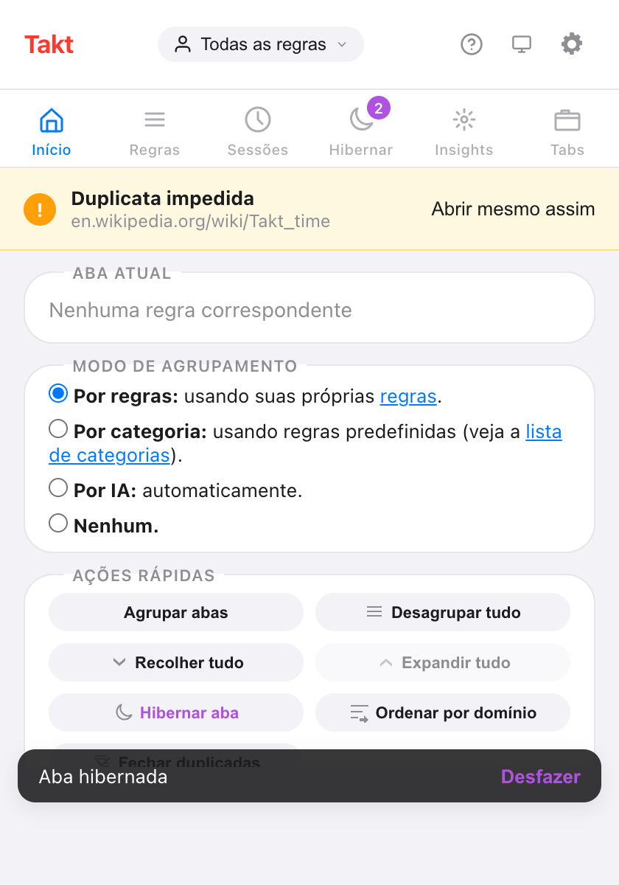

Resposta curta: abra o popup do Takt, escolha Por categoria ou Por IA em Modo de agrupamento, e o Takt reagrupa suas abas na hora.
- Categoria: 20 categorias fixas, como Development, Social e News. Sites desconhecidos vão para "Other".
- IA: o modelo integrado ao Chrome dá nome aos grupos. Ele roda no seu dispositivo.
- Os dois são gratuitos, até 5 grupos em todas as janelas. O Premium remove o limite.
Quais modos de agrupamento o Takt tem?
Quatro, e só um fica ativo por vez. Você escolhe no popup, em Modo de agrupamento.
| Modo | Como as abas são agrupadas | Configuração |
|---|---|---|
| Por regras (padrão) | Pelas regras de URL que você escreve | Uma regra por grupo |
| Por categoria | Por site, em 20 categorias prontas | Nenhuma |
| Por IA | Por assunto, com nomes dados pelo modelo no dispositivo do Chrome | Nenhuma |
| Nenhum | O Takt não agrupa abas | Nenhuma |
Quando você troca de modo, o Takt desagrupa suas abas e as reagrupa no novo modo. A escolha fica salva. Escolher Nenhum desagrupa tudo e para de agrupar.

Como funciona o agrupamento por categoria?
O Takt olha só o nome do host de cada aba. Ele consulta uma lista interna de 77 sites conhecidos, cada um associado a uma de 20 categorias:
Development, AI Tools, Docs, Productivity, Communication, Finance, Design, Shopping, Social, Entertainment, News, Gaming, Sports, Travel, Health, Food, Science, Career, Education e Cloud.
- Subdomínios herdam a categoria. docs.github.com não está na lista, então o Takt tenta github.com e coloca a aba em Development.
- Vence o host mais específico. aws.amazon.com vai para Cloud. amazon.com vai para Shopping.
- Todo o resto vai para Other. Isso inclui a intranet da sua empresa, páginas de nova aba e qualquer site que a lista não conhece. Other é sempre o último grupo.
A maior categoria vira o primeiro grupo, depois a segunda maior, e assim por diante. As novas abas entram no grupo da sua categoria enquanto carregam. Neste modo, o Takt não lê nenhum conteúdo das páginas.
Como funciona o agrupamento com IA?
O Takt envia o título de cada aba e até 500 caracteres do texto da página para a Prompt API integrada ao Chrome. O modelo roda dentro do Chrome, no seu computador. Ele devolve um nome curto por assunto, e o Takt monta os grupos.
- Um grupo precisa de pelo menos 2 abas. Uma aba sem par fica sem grupo.
- Cada execução cobre até 100 abas.
- Os nomes vêm do modelo, então podem mudar de uma execução para outra.
- Ler o texto das páginas exige a permissão opcional "Acesso a todos os sites" do Takt. Sem ela, o Takt agrupa só pelos títulos e avisa no popup.
O modelo não roda a cada nova aba. No modo Por IA, as abas que você abre depois esperam o próximo clique em Agrupar abas ou Alt+Shift+G.
O que acontece na primeira vez que uso o modo Por IA?
Talvez o Chrome precise baixar antes o modelo no dispositivo. O Takt inicia o download quando você clica em Agrupar abas e mostra o progresso no popup: "Preparando modelo de IA…", depois "Baixando modelo de IA (N%)…", depois "Modelo de IA pronto. Agrupando abas…". O agrupamento continua sozinho quando o modelo fica pronto.
E se meu computador não rodar o modelo de IA do Chrome?
O Takt agrupa suas abas mesmo assim. Ele recorre a um método por semelhança, que agrupa as abas que têm palavras em comum no título e no nome do site, e o popup mostra "IA indisponível neste dispositivo."
O mesmo método alternativo entra em ação se o modelo demorar demais: 2 minutos para carregar ou 8 segundos para responder. Ele também cuida das novas abas no modo Por IA: uma nova aba entra no grupo existente mais próximo e nunca cria um grupo novo.
O que é o limite gratuito de 5 grupos?
No plano gratuito, os modos Por categoria e Por IA criam no máximo 5 grupos de abas. O limite conta todos os grupos de abas abertos no Chrome, em todas as janelas, inclusive os que você criou à mão.
- Se uma execução passar do limite, o Takt mantém os maiores grupos e deixa o resto sem grupo.
- Se você já tem 5 grupos, o popup diz "You've hit the 5-group limit. Ungroup some tabs to create more."
- O modo Por regras tem seu próprio limite gratuito, de 5 regras.
O Premium (US$ 3/mês ou US$ 30/ano) remove o limite de grupos.
O Chrome já não faz isso?
Não. O organizador de guias com IA do Chrome, que rodava na nuvem e só estava disponível nos EUA, foi desativado em 2025. O Chrome atual não agrupa as abas por você. Você pode criar, salvar e sincronizar grupos à mão, mas distribuir as abas fica por sua conta.
O modo Por IA do Takt usa a Prompt API do Chrome, que roda no seu dispositivo, então os títulos das abas ficam no seu computador. O modo Por categoria não precisa de modelo nenhum.
| Chrome sem extensão | Takt Por categoria | Takt Por IA | |
|---|---|---|---|
| Quando agrupa | Só à mão | Ao clicar em Agrupar abas, e cada nova aba enquanto carrega | Ao clicar em Agrupar abas |
| Nomes dos grupos | Você digita | Fixos: 20 categorias + Other | Sugeridos pelo modelo |
| Roda no dispositivo | Sem agrupamento por IA | Sim, sem precisar de modelo | Sim |
| Passar para suas próprias regras | Não | Sim, um clique para o modo Por regras | |
| Preço | Grátis | Grátis até 5 grupos; Premium ilimitado | |
Onde categoria e IA deixam a desejar
- A lista de categorias é fixa. Não dá para adicionar um site nem renomear uma categoria. Se você renomear um grupo no Chrome, o Takt volta a usar o nome interno na próxima execução.
- As cores se repetem. 20 categorias dividem as 8 cores de grupo do Chrome. O que identifica um grupo é o nome.
- Os nomes da IA mudam. Rode duas vezes e você pode receber nomes diferentes.
- Perfis e agendamentos não se aplicam. Eles só funcionam no modo Por regras.
Se você quer o github.com sempre num grupo chamado "Code", escreva uma regra. Não sabe quais regras escrever? Deixe o Takt sugerir.
Escolha um modo. Veja 30 abas soltas virarem cinco grupos com nome.
Adicionar o Takt ao Chrome, grátisPerguntas frequentes
Agrupar por categoria ou com IA é gratuito?
Sim. Os dois são gratuitos, até 5 grupos de abas no total em todas as janelas, contando os grupos que você criou à mão. O Premium (US$ 3/mês ou US$ 30/ano) remove o limite.
O agrupamento por IA do Takt envia minhas abas para um servidor?
Não. Ele usa a Prompt API integrada ao Chrome, que roda no seu dispositivo. Veja como o Takt mantém os dados no seu computador.
E se o modelo de IA do Chrome não estiver disponível no meu computador?
O Takt agrupa as abas que têm palavras em comum no título e no nome do site, e avisa que a IA está indisponível neste dispositivo.
Posso adicionar meus próprios sites a uma categoria?
Não. A lista é fixa e sites desconhecidos vão para Other. Use o modo Por regras para mandar um site para um grupo com o nome que você escolher.